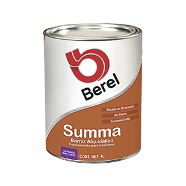
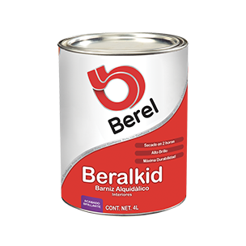
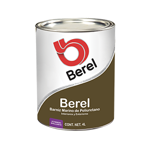

|
Summa 1600
No. 1600
Barniz alquidálico transparente de excelente brillo y gran duración. Posee un buen nivelado, gran rapidez de secado y es fácil de aplicar.
1) Secado en 30 minutos
2) Para interiores
3) Acabado: Brillante
4) Rendimiento (a 2 manos)*: 7-9m2/L
5) Presentaciones: 0.250L, 0.500L, 1L, 4L, 19L
|

|
|

|
Beralkid
No. 1400
Barniz alquidálico transparente, de excelente brillo y gran duración. Es fácil de aplicar, tiene un excelente nivelado y dureza.
1) Alto Brillo
2) Máxima duración
3) Para interiores
4) Acabado: Brillante
5) Rendimiento (a 2 manos)*: 8-10m2/L
6) Presentaciones: 0.250L, 0.500L, 1L, 4L, 19L
|
|
Barniz Marino
No. 1100
Barniz Poliuretano de un solo componente, transparente, de alto brillo y secado rápido. Posee alta resistencia a la abrasión, es impermeable a la humedad, ofrece gran rendimiento y excelente durabilidad.
1) Excelente resistencia al exterior y durabilidad
2) Para interiores y/o exteriores
3) Acabado: Brillante
4) Rendimiento (a 2 manos)*: 7-8m2/L
5) Presentaciones: 1L, 4L
|

|